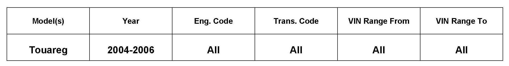
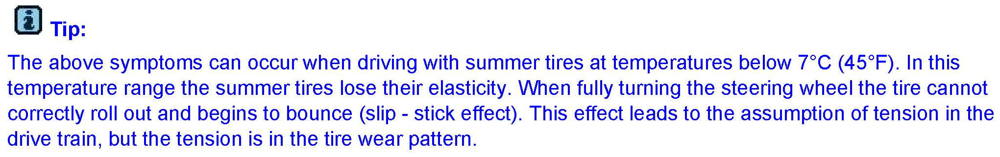
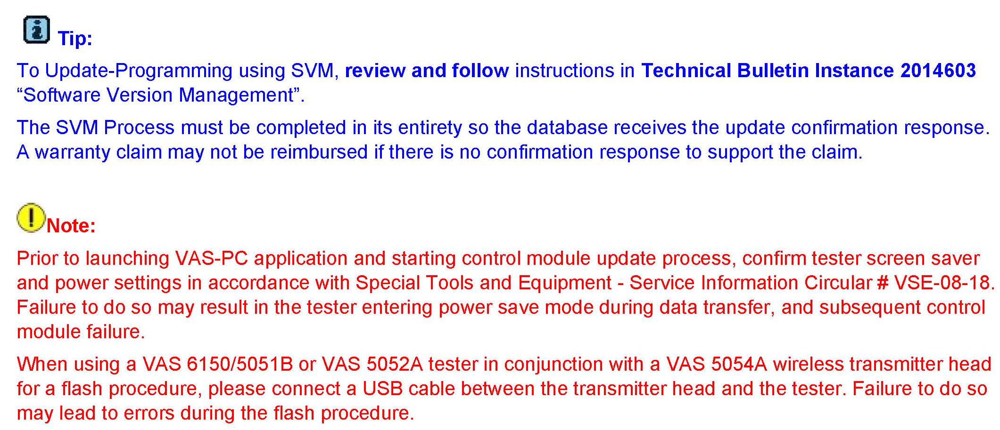
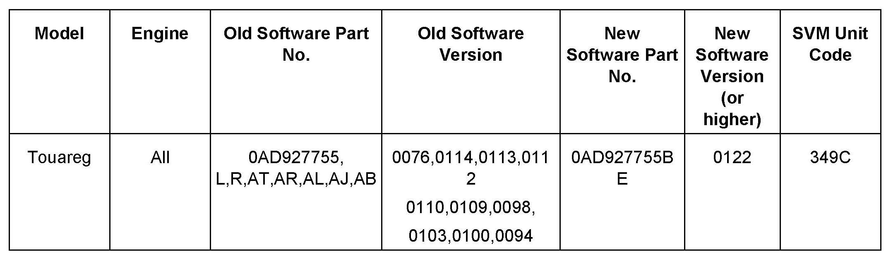
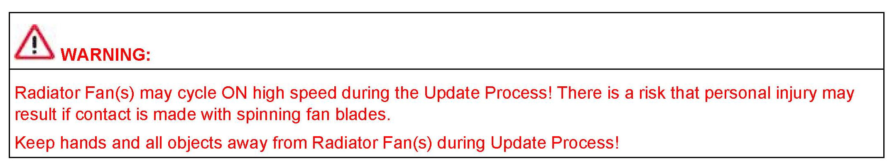
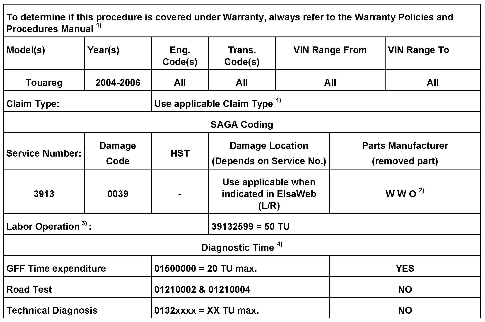
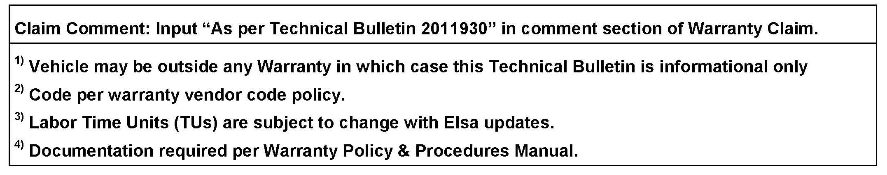
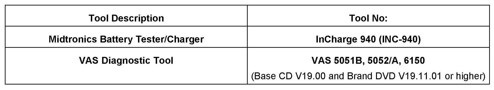

Drivetrain - Low Speed Turns Binding Or Scrubbing/DTC's
01 11 29December 21, 2011
2011930 Supersedes T.B. Group 01 number 09-16 dated September 16, 2009 to update programming to software version management (SVM).

Vehicle Information
Condition
Drivetrain Binding/Tires Scrubbing During Low Speed Maneuvering, ESP Light in Instrument Cluster ON or Flashing
During low speed turns/maneuvering, vehicle drivetrain feels as if it is binding or tires are scrubbing on pavement. Customer may also state that the ESP light in instrument cluster is ON or Flickering.
Other customer described concerns may include, but are not limited to:
^ Tension in drivetrain
^ Vibration and load sensitive knocking from the drivetrain
^ Cracking noise upon acceleration from stop, while cornering or driving slowly
^ Shudder when cornering
^ Rubbing or slipping when cornering
^ Electronic faults in 22-Four wheel drive electronics: DTCs 02033, 02039, 02042 or 02409 stored.
Technical Background
The clutch disc of the differential has a remaining locking effect because of the differential control module software.
This is perceived as tension in the drivetrain.

Tip:
Production Solution
Improved control of the locking effect with updated Differential Control Module -J646- software.
Service
1. Enter Guided Fault Finding and complete the test plans for DTC's found.
2. Inspect all wheels and tires for standard equipment, tire size, tread depth and tire pressure. Four wheel drive vehicle tires must not be unevenly worn.
3. Check for tension in the drive train by driving the vehicle around a tight bend with the transmission gear selector in "D".
If the tension in the drive train eases, check whether the differential control module has the current software version 0122. If not, update as necessary using following the SVM procedure below.
Update-Programming Procedure:

Tip and Note

Update the Differential Control Module using the SVM Unit code as listed in the table shown.

The procedure can be found in GFF under Functions/Component Selection, Software Version Management, Adapting Software.


Warranty

Required Parts and Tools
No Special Parts required.
Additional Information
All part and service references provided in this Technical Bulletin are subject to change and/or removal. Always check with your Parts Dept. and Repair Manuals for the latest information.